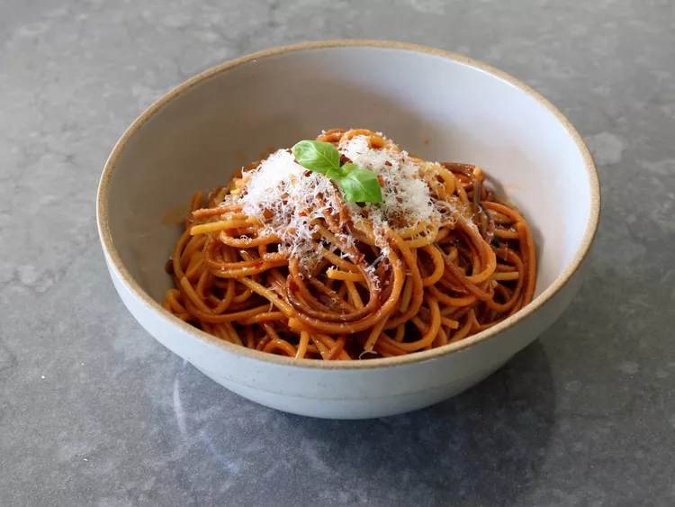

Grilled Spaghetti
Description
Grilled spaghetti is cooked directly in a very simple sauce, so that all the extra flavor from toasting dry pasta on a grill stays in the sauce. This is delicious on its own as a side dish, or as a base for other grilled things like eggplant or chicken.
Ingredients
- 8 ounces thick dry spaghetti
- 3 tablespoons olive oil
- 3 clove garlic, thinly sliced
- 2 rounded tablespoons tomato paste
- 3 3/4 cups chicken broth, plus more as needed
- 1 teaspoon salt, or to taste, depending on salt level of broth
- 2 tablespoons unsalted butter
- 1/4 cup basil leaves, torn into small pieces
- 1/4 cup finely grated Parmigiano Reggiano or to taste
- 1 pinch red chili flakes (optional)
Steps
- Prepare an outdoor charcoal grill for medium-high heat.
- Place dry spaghetti on the hot charcoal grill, and cook, tossing often with tongs until the pasta is toasted to a light brown, about 4 minutes. Remove and set aside.
- Add olive oil to a pan, and set over medium heat. Add garlic and sauté until fragrant, 30 seconds to 1 minute. Add tomato paste and sauté for about 1 minute; pour in broth.
- Raise heat to medium-high and bring broth to a simmer. Add salt and grilled spaghetti, and use tongs to move spaghetti back and forth until it softens enough to be covered by the broth.
- Cook, stirring, until spaghetti is as tender as you like; it will take a few minutes longer than package directions indicate. If pan gets too dry, add another splash of broth.
- Reduce heat to low; stir in butter and basil. Turn off heat and stir in cheese. Serve immediately.